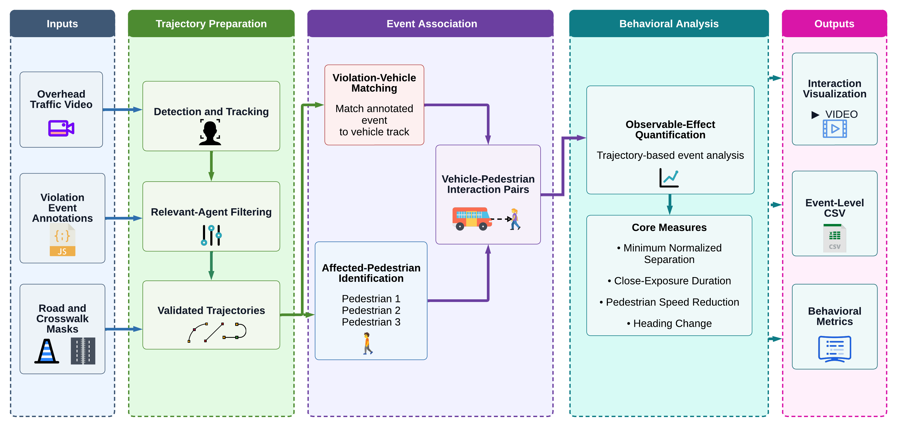
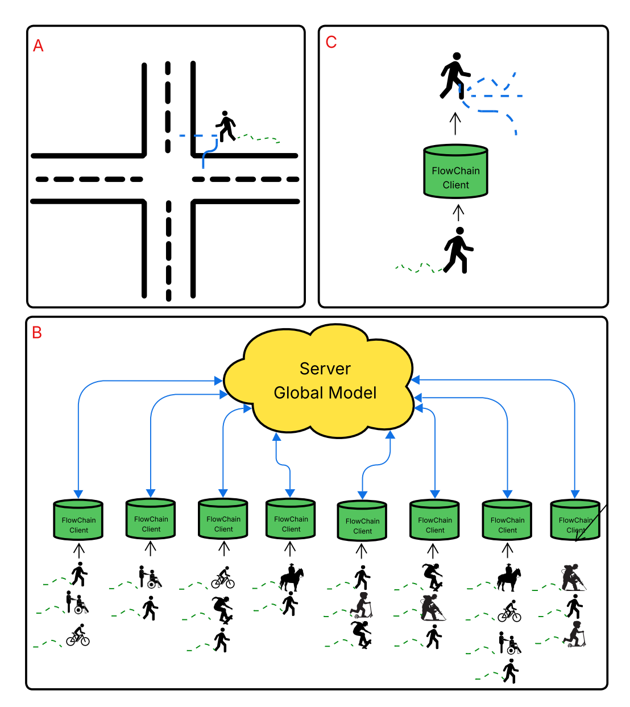
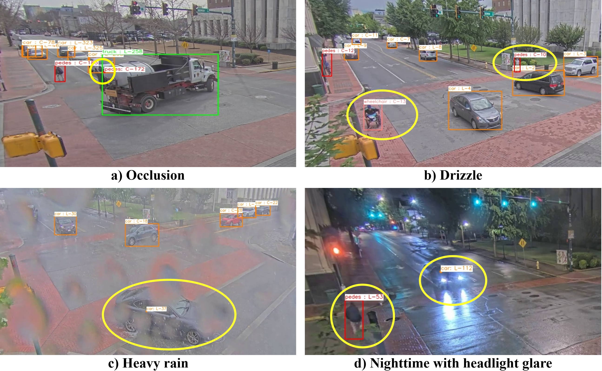
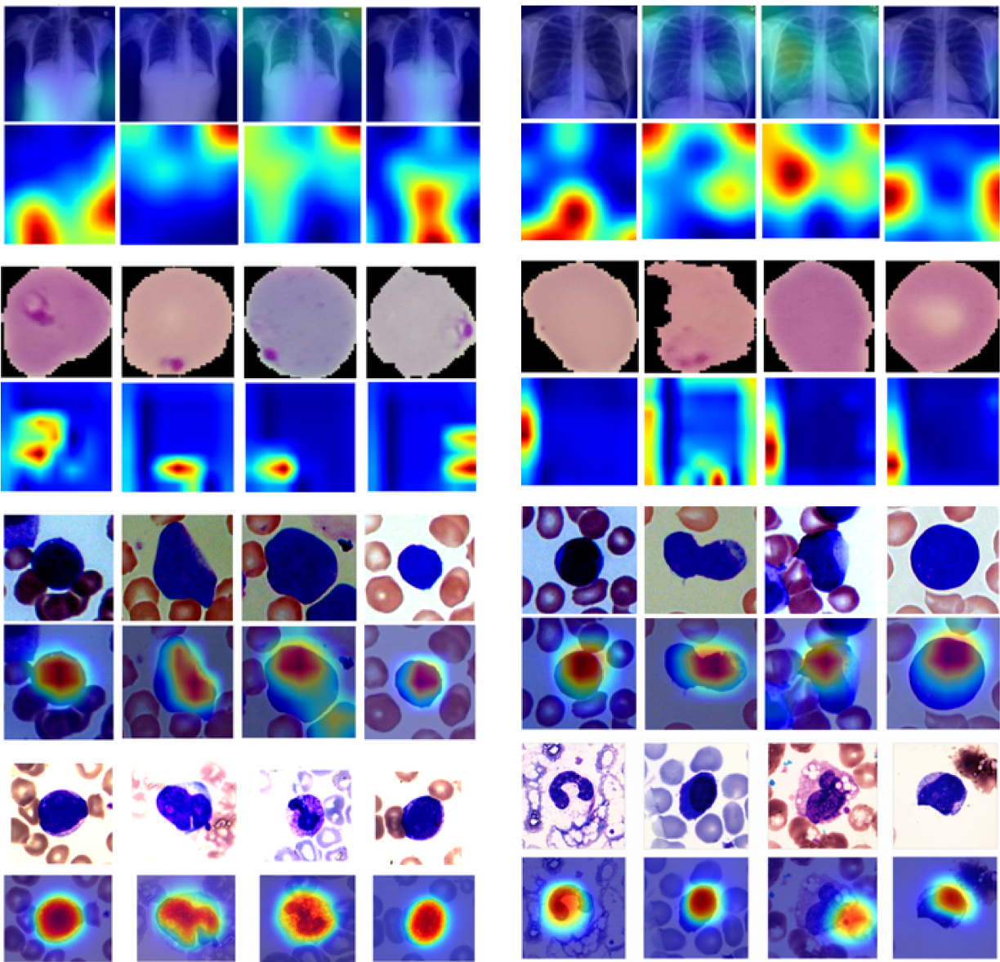
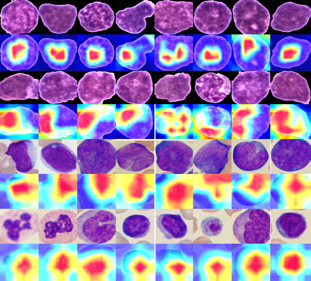
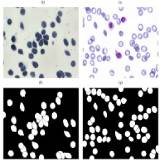

Deponker Sarker Depto
M.S. Student
The University of Tennessee at Chattanooga
fhh758@mocs.utc.edu
Home
About
News
Publications
Services
Teaching
Projects
Conferences

TRB 2027
A Modular Video Analytics Framework for Quantifying Pedestrian1 Responses to Vehicle Non-Yielding at Crosswalks
Deponker Sarker Depto
, Mina Sartipi, Hoang H. Nguyen
Transportation Research Board (TRB) Annual Meeting, 2027. Poster Presentation.
Poster

TRB 2026
Toward Safer Streets: Novel Federated Learning Strategies for Vulnerable Road User Trajectory Forecasting
Deponker Sarker Depto
, Emiliano de la Garza Villarreal, Tam Bang, Mina Sartipi, Toru Hirano, Yunfei Xu, Hoang H. Nguyen
Transportation Research Board (TRB) Annual Meeting, 2026. Poster Presentation.
PDF
Poster
TRB Online Archive

TRB 2026
Real-Time Edge-Based Multi-Sensor Fusion for Vulnerable Road User Safety at Urban Intersections
Tam Bang, Hoang H. Nguyen,
Deponker Sarker Depto
, Lei Cheng, Lihao Guo, Siyang Cao, Tianya Zhang, Austin Harris, Mina Sartipi,
Transportation Research Board (TRB) Annual Meeting, 2026. (Lectern Session).
TRB Online Archive
Journals

Engineering Reports
Understanding When Attention Helps: A Systematic Empirical Study of Attention Mechanisms in Medical Image Classification
Nujhat Raisa Arpa, Mahtab Newaz, Md. Mazharul Islam Nibir, Ramisa Lamya,
Deponker Sarker Depto
, M. R. C. Mahdy
Engineering Reports, 2026.
PDF
Code

CIBM
Quantifying imbalanced classification methods for leukemia detection
Deponker Sarker Depto
, Md Mashfiq Rizvee, Aimon Rahman, Hasib Zunair, M Sohel Rahman, MRC Mahdy
Computers in Biology and Medicine, 2022.
PDF
Code

Tissue and Cell
Automatic segmentation of blood cells from microscopic slides: a comparative analysis
Deponker Sarker Depto
, Shazidur Rahman, Md Mekayel Hosen, Mst Shapna Akter, Tamanna Rahman Reme, Aimon Rahman, Hasib Zunair, M Sohel Rahman, MRC Mahdy
Tissue and Cell, 2020.
PDF
Code